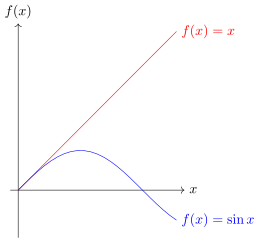
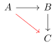

Aquí vamos a mostrar los distintos tamaños de fuentes y sus estilos.
Este es el tamaño principal.
El inmediato superior.
El inmediato superior.
El inmediato superior.
El más grande.
El más grande.
Regresamos a tamaño principal.
El inmediato inferior
El que sigue para abajo
Más chiquito
Chiiquitito
En negritas ya no
Itálicas ya no
Inclinadas ya no
Versalitas ya no. Ej. El siglo XXI se acostumbra indacarlo en versalitas, como siglo xxi
Chiquitita itálica y negritas
LETRAS EN MAYÚSCULAS
Texto en grosor intermedio
Para enfatizar solo una palabra en el texto
Así se pueden subrayar las cosas.
La sin patines (sans-serif) es la family Texto sin patines
Esta es fuente mono espaciada mix mix
prosell@im.unam.mx
gerardoalmazanparra@ciencias.unam.mx
Se usan paquetes especiales para usarlas final fi
Se usan paquetes especiales para usarlas final fi
Se usan paquetes especiales para usarlas final fi Se usan paquetes especiales para usarlas final fi
\(\mathcal {ABCDEFGH abcdfgh}\)
\(\mathbb {ABCDFGH}\)
\(\mathfrak {abcdfg ABCDFG}\)
\(\mathscr {ABCDF}\)
Por ejemplo, podemos considerar \(\mathcal {F}\) una familia de funciones
Demostración. La demostración del teorema \(x^2=-1\). Otra forma de poner matemáticas en modo línea es \(x^2-y\) En texto se ve mal: \(\frac {-b\pm \sqrt {b^2-4ac}}{2a}\)
Demostración.
Otras listas
Modificar listas. Se usa parámetros
opcionales después de \begin{lista}[parámetros]. Podemos modificar
el símbolo de enumeración, espacios entre elementos y márgenes, etc.
Bibliografía usando base de datos.[Lam93]
Hipervínculos internos y externos en el documento
Permite insertar y manipular imágenes.
Para gráficos
Para dibujar diagramas conmutativos.
Se insertan imágenes con el paquete graphicx.
Permite diseñar diversos tipos de gráficos con el paquete tikZ

Se insertan diagramas conmutativos con el paquete tikzcd.

Es una paquetría que nos permite un mejor diseño a la hora de usar ecuaciones:
Ejemplo 1:
Sin la función \mathclap del paquete \mathtools, se generan espacios
adicionales a ambos lados del símbolo de sumatoria debido a los índices
situados debajo. Un sencillo comando de mathtools permite condensar el
resultado.
Ejemplo 2:
Permite superíndices y subíndices a la izquierda (o después) de un símbolo:
Ejemplo 3:
Dibuja una caja alredeor de la ecuación:
Demostración.